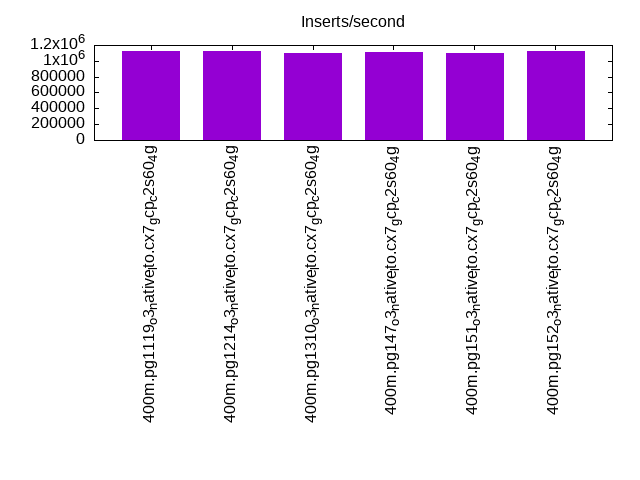
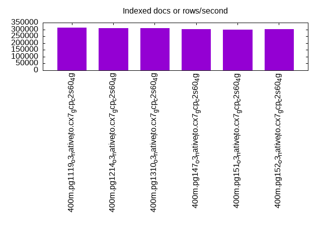
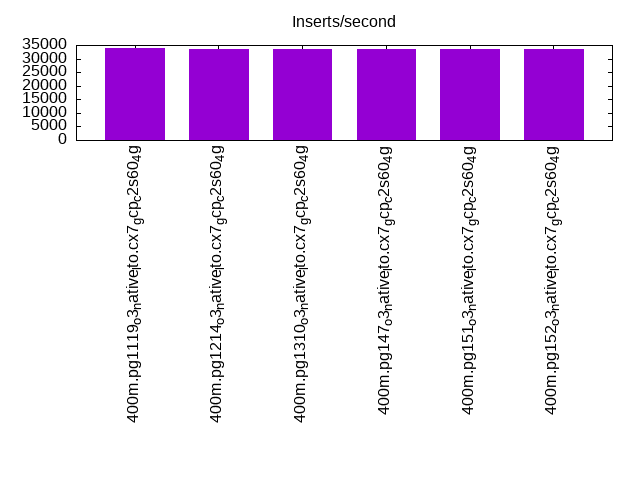
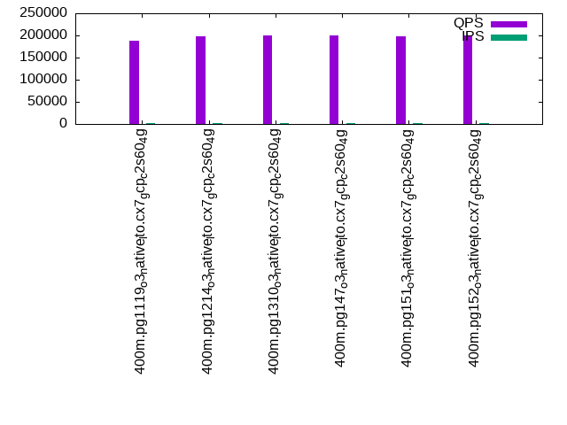
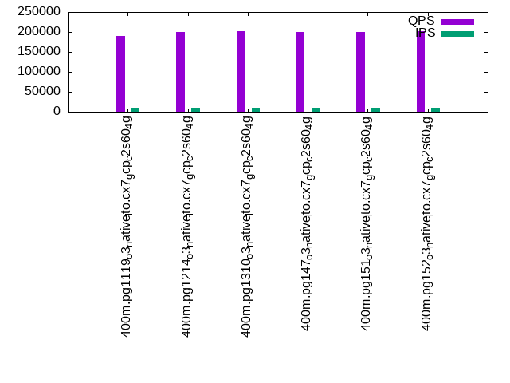
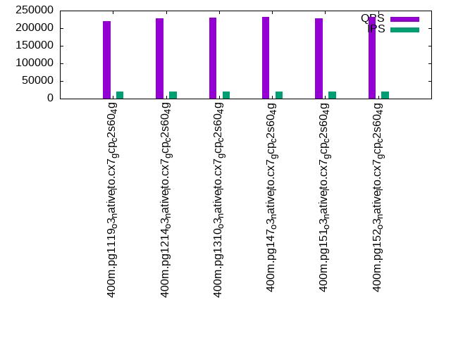

This is a report for the insert benchmark with 400M docs and 20 client(s). It is generated by scripts (bash, awk, sed) and Tufte might not be impressed. An overview of the insert benchmark is here and a short update is here. Below, by DBMS, I mean DBMS+version.config. An example is my8020.c10b40 where my means MySQL, 8020 is version 8.0.20 and c10b40 is the name for the configuration file.
The test server is a c2-standard-60 from GCP with 30 cores, hyperthreading disabled, 240G RAM and 3T from XFS and SW RAID 0 striped over 8 local NVMe drives. The benchmark was run with 20 clients and there were 1 or 2 connections per client (1 for queries, 1 for inserts). The benchmark loads 400M rows without secondary indexes, creates secondary indexes, loads another 400M rows then does 3 read+write tests for one hour each that do queries as fast as possible with 100, 500 and then 1000 writes/second/client concurrent with the queries. Each read-write test runs for 1800 seconds. The test was configured to use one table. The database fits in the OS page cache but not the DBMS buffer pool. Clients and the DBMS share one server. The per-database configs are in the per-database subdirectories here.
The tested DBMS are:
The numbers are inserts/s for l.i0 and l.i1, indexed docs (or rows) /s for l.x and queries/s for q*.2. The values are the average rate over the entire test for inserts (IPS) and queries (QPS). The range of values for IPS and QPS is split into 3 parts: bottom 25%, middle 50%, top 25%. Values in the bottom 25% have a red background, values in the top 25% have a green background and values in the middle have no color. A gray background is used for values that can be ignored because the DBMS did not sustain the target insert rate. Red backgrounds are not used when the minimum value is within 80% of the max value.
| dbms | l.i0 | l.x | l.i1 | q100.1 | q500.1 | q1000.1 |
|---|---|---|---|---|---|---|
| 400m.pg1119_o3_native_lto.cx7_gcp_c2s60_4g | 1129944 | 312090 | 33758 | 188553 | 190603 | 219889 |
| 400m.pg1214_o3_native_lto.cx7_gcp_c2s60_4g | 1120448 | 310637 | 33650 | 198191 | 199459 | 227352 |
| 400m.pg1310_o3_native_lto.cx7_gcp_c2s60_4g | 1101928 | 308243 | 33667 | 200022 | 202718 | 229618 |
| 400m.pg147_o3_native_lto.cx7_gcp_c2s60_4g | 1108033 | 302648 | 33428 | 199166 | 200818 | 232711 |
| 400m.pg151_o3_native_lto.cx7_gcp_c2s60_4g | 1104972 | 300150 | 33470 | 197081 | 199585 | 227015 |
| 400m.pg152_o3_native_lto.cx7_gcp_c2s60_4g | 1120448 | 301734 | 33484 | 199988 | 202582 | 231098 |
This lists the average rate of inserts/s for the tests that do inserts concurrent with queries. For such tests the query rate is listed in the table above. The read+write tests are setup so that the insert rate should match the target rate every second. Cells that are not at least 95% of the target have a red background to indicate a failure to satisfy the target.
| dbms | q100.1 | q500.1 | q1000.1 |
|---|---|---|---|
| pg1119_o3_native_lto.cx7_gcp_c2s60_4g | 1976 | 9885 | 19683 |
| pg1214_o3_native_lto.cx7_gcp_c2s60_4g | 1976 | 9890 | 19661 |
| pg1310_o3_native_lto.cx7_gcp_c2s60_4g | 1976 | 9885 | 19672 |
| pg147_o3_native_lto.cx7_gcp_c2s60_4g | 1976 | 9885 | 19694 |
| pg151_o3_native_lto.cx7_gcp_c2s60_4g | 1976 | 9885 | 19683 |
| pg152_o3_native_lto.cx7_gcp_c2s60_4g | 1976 | 9885 | 19694 |
| target | 2000 | 10000 | 20000 |
l.i0: load without secondary indexes. Graphs for performance per 1-second interval are here.
Average throughput:
Insert response time histogram: each cell has the percentage of responses that take <= the time in the header and max is the max response time in seconds. For the max column values in the top 25% of the range have a red background and in the bottom 25% of the range have a green background. The red background is not used when the min value is within 80% of the max value.
| dbms | 256us | 1ms | 4ms | 16ms | 64ms | 256ms | 1s | 4s | 16s | gt | max |
|---|---|---|---|---|---|---|---|---|---|---|---|
| pg1119_o3_native_lto.cx7_gcp_c2s60_4g | 28.387 | 68.721 | 2.800 | 0.050 | 0.029 | 0.012 | 0.760 | ||||
| pg1214_o3_native_lto.cx7_gcp_c2s60_4g | 26.679 | 70.318 | 2.939 | 0.022 | 0.025 | 0.016 | 0.001 | 1.283 | |||
| pg1310_o3_native_lto.cx7_gcp_c2s60_4g | 28.161 | 68.546 | 3.218 | 0.029 | 0.031 | 0.014 | 0.001 | 1.307 | |||
| pg147_o3_native_lto.cx7_gcp_c2s60_4g | 26.313 | 70.766 | 2.854 | 0.024 | 0.024 | 0.018 | 0.756 | ||||
| pg151_o3_native_lto.cx7_gcp_c2s60_4g | 28.125 | 68.867 | 2.944 | 0.023 | 0.022 | 0.017 | 0.001 | 1.273 | |||
| pg152_o3_native_lto.cx7_gcp_c2s60_4g | 30.850 | 66.192 | 2.886 | 0.025 | 0.031 | 0.016 | 0.001 | 1.153 |
Performance metrics for the DBMS listed above. Some are normalized by throughput, others are not. Legend for results is here.
ips qps rps rmbps wps wmbps rpq rkbpq wpi wkbpi csps cpups cspq cpupq dbgb1 dbgb2 rss maxop p50 p99 tag 1129944 0 195 2.1 2368.0 482.6 0.000 0.002 0.002 0.437 336807 58.6 0.298 16 44.2 114.2 NA 0.760 62754 12486 400m.pg1119_o3_native_lto.cx7_gcp_c2s60_4g 1120448 0 320 2.5 2481.0 469.8 0.000 0.002 0.002 0.429 308124 58.1 0.275 16 43.0 112.4 NA 1.283 62158 12186 400m.pg1214_o3_native_lto.cx7_gcp_c2s60_4g 1101928 0 132 3.8 2161.3 466.1 0.000 0.004 0.002 0.433 330578 56.9 0.300 15 43.0 112.5 0.0 1.307 61632 10793 400m.pg1310_o3_native_lto.cx7_gcp_c2s60_4g 1108033 0 206 4.4 2265.0 469.1 0.000 0.004 0.002 0.433 313624 57.1 0.283 15 43.0 112.4 NA 0.756 62041 8990 400m.pg147_o3_native_lto.cx7_gcp_c2s60_4g 1104972 0 204 4.8 2258.8 464.8 0.000 0.004 0.002 0.431 321474 56.8 0.291 15 43.0 112.6 NA 1.273 61932 5194 400m.pg151_o3_native_lto.cx7_gcp_c2s60_4g 1120448 0 207 4.7 2271.6 476.3 0.000 0.004 0.002 0.435 323412 56.7 0.289 15 43.0 112.5 NA 1.153 62732 10189 400m.pg152_o3_native_lto.cx7_gcp_c2s60_4g
l.x: create secondary indexes.
Average throughput:
Performance metrics for the DBMS listed above. Some are normalized by throughput, others are not. Legend for results is here.
ips qps rps rmbps wps wmbps rpq rkbpq wpi wkbpi csps cpups cspq cpupq dbgb1 dbgb2 rss maxop p50 p99 tag 312090 0 2091 44.6 521.2 113.0 0.007 0.146 0.002 0.371 1861 3.4 0.006 3 79.5 152.9 0.0 0.003 NA NA 400m.pg1119_o3_native_lto.cx7_gcp_c2s60_4g 310637 0 1457 44.0 596.7 115.3 0.005 0.145 0.002 0.380 1937 3.4 0.006 3 78.3 150.2 0.0 0.002 NA NA 400m.pg1214_o3_native_lto.cx7_gcp_c2s60_4g 308243 0 1726 42.0 439.0 103.9 0.006 0.139 0.001 0.345 1903 3.4 0.006 3 78.3 147.7 0.0 0.002 NA NA 400m.pg1310_o3_native_lto.cx7_gcp_c2s60_4g 302648 0 2093 41.7 478.4 110.0 0.007 0.141 0.002 0.372 1833 3.4 0.006 3 78.3 162.6 0.0 0.002 NA NA 400m.pg147_o3_native_lto.cx7_gcp_c2s60_4g 300150 0 3117 43.3 506.1 114.9 0.010 0.148 0.002 0.392 2039 3.3 0.007 3 78.3 162.3 0.0 0.002 NA NA 400m.pg151_o3_native_lto.cx7_gcp_c2s60_4g 301734 0 2211 43.4 517.5 117.7 0.007 0.147 0.002 0.399 2043 3.3 0.007 3 78.3 162.9 0.0 0.002 NA NA 400m.pg152_o3_native_lto.cx7_gcp_c2s60_4g
l.i1: continue load after secondary indexes created. Graphs for performance per 1-second interval are here.
Average throughput:
Insert response time histogram: each cell has the percentage of responses that take <= the time in the header and max is the max response time in seconds. For the max column values in the top 25% of the range have a red background and in the bottom 25% of the range have a green background. The red background is not used when the min value is within 80% of the max value.
| dbms | 256us | 1ms | 4ms | 16ms | 64ms | 256ms | 1s | 4s | 16s | gt | max |
|---|---|---|---|---|---|---|---|---|---|---|---|
| pg1119_o3_native_lto.cx7_gcp_c2s60_4g | 0.194 | 6.555 | 87.950 | 5.300 | nonzero | 0.688 | |||||
| pg1214_o3_native_lto.cx7_gcp_c2s60_4g | 0.209 | 6.571 | 87.937 | 5.282 | 0.001 | 0.623 | |||||
| pg1310_o3_native_lto.cx7_gcp_c2s60_4g | 0.209 | 6.256 | 88.214 | 5.320 | 0.001 | 0.650 | |||||
| pg147_o3_native_lto.cx7_gcp_c2s60_4g | 0.056 | 5.848 | 88.743 | 5.351 | 0.002 | 0.430 | |||||
| pg151_o3_native_lto.cx7_gcp_c2s60_4g | 0.058 | 5.720 | 88.869 | 5.352 | 0.002 | 0.646 | |||||
| pg152_o3_native_lto.cx7_gcp_c2s60_4g | 0.059 | 5.799 | 88.801 | 5.339 | 0.003 | 0.415 |
Performance metrics for the DBMS listed above. Some are normalized by throughput, others are not. Legend for results is here.
ips qps rps rmbps wps wmbps rpq rkbpq wpi wkbpi csps cpups cspq cpupq dbgb1 dbgb2 rss maxop p50 p99 tag 33758 0 71047 658.0 61534.1 596.1 2.105 19.960 1.823 18.082 130209 12.8 3.857 114 176.4 241.8 0.0 0.688 1698 749 400m.pg1119_o3_native_lto.cx7_gcp_c2s60_4g 33650 0 72355 664.8 61181.5 592.8 2.150 20.232 1.818 18.040 130254 12.6 3.871 112 170.2 235.1 0.0 0.623 1698 749 400m.pg1214_o3_native_lto.cx7_gcp_c2s60_4g 33667 0 70250 656.6 61298.0 596.1 2.087 19.972 1.821 18.131 130376 12.6 3.872 112 170.2 241.6 0.0 0.650 1698 749 400m.pg1310_o3_native_lto.cx7_gcp_c2s60_4g 33428 0 71455 661.7 60900.2 583.5 2.138 20.270 1.822 17.874 129296 12.5 3.868 112 170.2 251.4 0.0 0.430 1698 749 400m.pg147_o3_native_lto.cx7_gcp_c2s60_4g 33470 0 71636 663.3 60894.0 584.4 2.140 20.295 1.819 17.879 129469 12.5 3.868 112 170.2 250.2 0.0 0.646 1698 749 400m.pg151_o3_native_lto.cx7_gcp_c2s60_4g 33484 0 71454 663.1 60922.3 584.9 2.134 20.277 1.819 17.888 129359 12.5 3.863 112 170.2 252.0 0.0 0.415 1698 749 400m.pg152_o3_native_lto.cx7_gcp_c2s60_4g
q100.1: range queries with 100 insert/s per client. Graphs for performance per 1-second interval are here.
Average throughput:
Query response time histogram: each cell has the percentage of responses that take <= the time in the header and max is the max response time in seconds. For max values in the top 25% of the range have a red background and in the bottom 25% of the range have a green background. The red background is not used when the min value is within 80% of the max value.
| dbms | 256us | 1ms | 4ms | 16ms | 64ms | 256ms | 1s | 4s | 16s | gt | max |
|---|---|---|---|---|---|---|---|---|---|---|---|
| pg1119_o3_native_lto.cx7_gcp_c2s60_4g | 99.912 | 0.085 | 0.002 | 0.001 | nonzero | 0.032 | |||||
| pg1214_o3_native_lto.cx7_gcp_c2s60_4g | 99.926 | 0.071 | 0.002 | 0.001 | nonzero | 0.026 | |||||
| pg1310_o3_native_lto.cx7_gcp_c2s60_4g | 99.927 | 0.070 | 0.002 | 0.001 | nonzero | nonzero | 0.230 | ||||
| pg147_o3_native_lto.cx7_gcp_c2s60_4g | 99.926 | 0.071 | 0.002 | 0.001 | nonzero | 0.029 | |||||
| pg151_o3_native_lto.cx7_gcp_c2s60_4g | 99.922 | 0.075 | 0.002 | 0.001 | nonzero | 0.027 | |||||
| pg152_o3_native_lto.cx7_gcp_c2s60_4g | 99.927 | 0.070 | 0.002 | 0.001 | nonzero | 0.027 |
Insert response time histogram: each cell has the percentage of responses that take <= the time in the header and max is the max response time in seconds. For max values in the top 25% of the range have a red background and in the bottom 25% of the range have a green background. The red background is not used when the min value is within 80% of the max value.
| dbms | 256us | 1ms | 4ms | 16ms | 64ms | 256ms | 1s | 4s | 16s | gt | max |
|---|---|---|---|---|---|---|---|---|---|---|---|
| pg1119_o3_native_lto.cx7_gcp_c2s60_4g | 0.397 | 99.576 | 0.026 | 0.126 | |||||||
| pg1214_o3_native_lto.cx7_gcp_c2s60_4g | 0.603 | 99.392 | 0.004 | 0.001 | 0.322 | ||||||
| pg1310_o3_native_lto.cx7_gcp_c2s60_4g | 0.572 | 99.251 | 0.111 | 0.065 | 0.426 | ||||||
| pg147_o3_native_lto.cx7_gcp_c2s60_4g | 0.696 | 99.207 | 0.097 | 0.252 | |||||||
| pg151_o3_native_lto.cx7_gcp_c2s60_4g | 0.504 | 99.431 | 0.065 | 0.184 | |||||||
| pg152_o3_native_lto.cx7_gcp_c2s60_4g | 0.690 | 99.239 | 0.036 | 0.035 | 0.479 |
Performance metrics for the DBMS listed above. Some are normalized by throughput, others are not. Legend for results is here.
ips qps rps rmbps wps wmbps rpq rkbpq wpi wkbpi csps cpups cspq cpupq dbgb1 dbgb2 rss maxop p50 p99 tag 1976 188553 3822 38.4 4026.4 50.5 0.020 0.209 2.038 26.163 674843 63.0 3.579 100 177.6 220.7 0.0 0.032 9338 8970 400m.pg1119_o3_native_lto.cx7_gcp_c2s60_4g 1976 198191 3800 38.6 3962.6 50.1 0.019 0.200 2.006 25.980 707664 62.7 3.571 95 171.1 219.9 0.0 0.026 9781 9401 400m.pg1214_o3_native_lto.cx7_gcp_c2s60_4g 1976 200022 4026 40.0 4149.8 51.4 0.020 0.205 2.100 26.616 711185 62.7 3.556 94 171.1 219.8 0.0 0.230 9946 9494 400m.pg1310_o3_native_lto.cx7_gcp_c2s60_4g 1976 199166 3752 38.3 4123.0 50.7 0.019 0.197 2.087 26.268 711014 62.6 3.570 94 171.1 232.3 0.0 0.029 9925 9541 400m.pg147_o3_native_lto.cx7_gcp_c2s60_4g 1976 197081 3925 39.2 4121.9 51.4 0.020 0.204 2.086 26.627 704162 62.6 3.573 95 171.1 232.4 0.0 0.027 9749 9338 400m.pg151_o3_native_lto.cx7_gcp_c2s60_4g 1976 199988 3761 38.6 4124.0 51.0 0.019 0.198 2.087 26.427 713561 62.6 3.568 94 171.1 232.2 0.0 0.027 10021 9573 400m.pg152_o3_native_lto.cx7_gcp_c2s60_4g
q500.1: range queries with 500 insert/s per client. Graphs for performance per 1-second interval are here.
Average throughput:
Query response time histogram: each cell has the percentage of responses that take <= the time in the header and max is the max response time in seconds. For max values in the top 25% of the range have a red background and in the bottom 25% of the range have a green background. The red background is not used when the min value is within 80% of the max value.
| dbms | 256us | 1ms | 4ms | 16ms | 64ms | 256ms | 1s | 4s | 16s | gt | max |
|---|---|---|---|---|---|---|---|---|---|---|---|
| pg1119_o3_native_lto.cx7_gcp_c2s60_4g | 99.645 | 0.343 | 0.011 | 0.001 | nonzero | 0.028 | |||||
| pg1214_o3_native_lto.cx7_gcp_c2s60_4g | 99.689 | 0.299 | 0.011 | 0.001 | nonzero | nonzero | 0.226 | ||||
| pg1310_o3_native_lto.cx7_gcp_c2s60_4g | 99.694 | 0.294 | 0.011 | 0.001 | nonzero | 0.028 | |||||
| pg147_o3_native_lto.cx7_gcp_c2s60_4g | 99.703 | 0.285 | 0.011 | 0.001 | nonzero | 0.028 | |||||
| pg151_o3_native_lto.cx7_gcp_c2s60_4g | 99.685 | 0.304 | 0.011 | 0.001 | nonzero | 0.027 | |||||
| pg152_o3_native_lto.cx7_gcp_c2s60_4g | 99.708 | 0.280 | 0.011 | 0.001 | nonzero | 0.030 |
Insert response time histogram: each cell has the percentage of responses that take <= the time in the header and max is the max response time in seconds. For max values in the top 25% of the range have a red background and in the bottom 25% of the range have a green background. The red background is not used when the min value is within 80% of the max value.
| dbms | 256us | 1ms | 4ms | 16ms | 64ms | 256ms | 1s | 4s | 16s | gt | max |
|---|---|---|---|---|---|---|---|---|---|---|---|
| pg1119_o3_native_lto.cx7_gcp_c2s60_4g | 0.357 | 99.568 | 0.075 | 0.254 | |||||||
| pg1214_o3_native_lto.cx7_gcp_c2s60_4g | 0.536 | 99.410 | 0.054 | nonzero | 0.269 | ||||||
| pg1310_o3_native_lto.cx7_gcp_c2s60_4g | 0.563 | 99.417 | 0.020 | 0.152 | |||||||
| pg147_o3_native_lto.cx7_gcp_c2s60_4g | 0.838 | 99.131 | 0.029 | 0.002 | 0.272 | ||||||
| pg151_o3_native_lto.cx7_gcp_c2s60_4g | 0.674 | 99.282 | 0.044 | 0.188 | |||||||
| pg152_o3_native_lto.cx7_gcp_c2s60_4g | 0.878 | 99.089 | 0.026 | 0.007 | 0.329 |
Performance metrics for the DBMS listed above. Some are normalized by throughput, others are not. Legend for results is here.
ips qps rps rmbps wps wmbps rpq rkbpq wpi wkbpi csps cpups cspq cpupq dbgb1 dbgb2 rss maxop p50 p99 tag 9885 190603 18171 186.0 19877.3 210.6 0.095 1.000 2.011 21.821 661225 65.8 3.469 104 183.7 226.3 0.0 0.028 9450 8842 400m.pg1119_o3_native_lto.cx7_gcp_c2s60_4g 9890 199459 18235 186.0 19514.5 208.0 0.091 0.955 1.973 21.539 690985 65.3 3.464 98 176.0 220.6 0.0 0.226 9861 9206 400m.pg1214_o3_native_lto.cx7_gcp_c2s60_4g 9885 202718 18271 186.2 19566.9 209.7 0.090 0.940 1.980 21.721 697248 65.6 3.439 97 176.0 220.0 0.0 0.028 10053 9381 400m.pg1310_o3_native_lto.cx7_gcp_c2s60_4g 9885 200818 17715 184.1 19528.4 208.1 0.088 0.939 1.976 21.558 695673 65.4 3.464 98 176.0 229.6 0.0 0.028 9989 9334 400m.pg147_o3_native_lto.cx7_gcp_c2s60_4g 9885 199585 17868 184.6 19525.1 208.3 0.090 0.947 1.975 21.574 691791 65.4 3.466 98 176.0 229.6 0.0 0.027 9861 9206 400m.pg151_o3_native_lto.cx7_gcp_c2s60_4g 9885 202582 17609 183.8 19534.4 208.8 0.087 0.929 1.976 21.629 699796 65.4 3.454 97 176.0 229.8 0.0 0.030 10053 9338 400m.pg152_o3_native_lto.cx7_gcp_c2s60_4g
q1000.1: range queries with 1000 insert/s per client. Graphs for performance per 1-second interval are here.
Average throughput:
Query response time histogram: each cell has the percentage of responses that take <= the time in the header and max is the max response time in seconds. For max values in the top 25% of the range have a red background and in the bottom 25% of the range have a green background. The red background is not used when the min value is within 80% of the max value.
| dbms | 256us | 1ms | 4ms | 16ms | 64ms | 256ms | 1s | 4s | 16s | gt | max |
|---|---|---|---|---|---|---|---|---|---|---|---|
| pg1119_o3_native_lto.cx7_gcp_c2s60_4g | 99.426 | 0.551 | 0.022 | 0.002 | nonzero | 0.042 | |||||
| pg1214_o3_native_lto.cx7_gcp_c2s60_4g | 99.477 | 0.503 | 0.019 | 0.001 | nonzero | 0.064 | |||||
| pg1310_o3_native_lto.cx7_gcp_c2s60_4g | 99.480 | 0.500 | 0.019 | 0.001 | nonzero | 0.036 | |||||
| pg147_o3_native_lto.cx7_gcp_c2s60_4g | 99.512 | 0.469 | 0.018 | 0.001 | nonzero | nonzero | 0.071 | ||||
| pg151_o3_native_lto.cx7_gcp_c2s60_4g | 99.481 | 0.499 | 0.018 | 0.001 | nonzero | 0.053 | |||||
| pg152_o3_native_lto.cx7_gcp_c2s60_4g | 99.512 | 0.470 | 0.017 | 0.001 | nonzero | nonzero | 0.069 |
Insert response time histogram: each cell has the percentage of responses that take <= the time in the header and max is the max response time in seconds. For max values in the top 25% of the range have a red background and in the bottom 25% of the range have a green background. The red background is not used when the min value is within 80% of the max value.
| dbms | 256us | 1ms | 4ms | 16ms | 64ms | 256ms | 1s | 4s | 16s | gt | max |
|---|---|---|---|---|---|---|---|---|---|---|---|
| pg1119_o3_native_lto.cx7_gcp_c2s60_4g | 1.098 | 93.540 | 5.362 | nonzero | 0.285 | ||||||
| pg1214_o3_native_lto.cx7_gcp_c2s60_4g | 1.597 | 93.272 | 5.128 | 0.003 | 0.552 | ||||||
| pg1310_o3_native_lto.cx7_gcp_c2s60_4g | 1.965 | 92.903 | 5.131 | 0.001 | 0.506 | ||||||
| pg147_o3_native_lto.cx7_gcp_c2s60_4g | 1.926 | 92.982 | 5.093 | nonzero | 0.262 | ||||||
| pg151_o3_native_lto.cx7_gcp_c2s60_4g | 2.221 | 92.786 | 4.992 | 0.001 | 0.277 | ||||||
| pg152_o3_native_lto.cx7_gcp_c2s60_4g | 2.145 | 92.861 | 4.993 | 0.001 | 0.411 |
Performance metrics for the DBMS listed above. Some are normalized by throughput, others are not. Legend for results is here.
ips qps rps rmbps wps wmbps rpq rkbpq wpi wkbpi csps cpups cspq cpupq dbgb1 dbgb2 rss maxop p50 p99 tag 19683 219889 37761 383.2 37891.8 401.6 0.172 1.785 1.925 20.894 677985 70.0 3.083 96 197.2 256.7 0.0 0.042 11028 8075 400m.pg1119_o3_native_lto.cx7_gcp_c2s60_4g 19661 227352 38049 384.6 37303.1 400.8 0.167 1.732 1.897 20.873 705286 69.7 3.102 92 189.4 249.9 0.0 0.064 11092 8279 400m.pg1214_o3_native_lto.cx7_gcp_c2s60_4g 19672 229618 38012 384.4 37321.3 400.0 0.166 1.714 1.897 20.822 711809 69.6 3.100 91 189.4 249.9 0.0 0.036 11400 8346 400m.pg1310_o3_native_lto.cx7_gcp_c2s60_4g 19694 232711 38338 387.6 37374.9 392.0 0.165 1.705 1.898 20.380 718097 69.7 3.086 90 189.4 261.3 0.0 0.071 11427 8420 400m.pg147_o3_native_lto.cx7_gcp_c2s60_4g 19683 227015 37484 381.1 37350.3 391.6 0.165 1.719 1.898 20.371 707777 69.6 3.118 92 189.4 261.2 0.0 0.053 11305 8438 400m.pg151_o3_native_lto.cx7_gcp_c2s60_4g 19694 231098 37974 384.3 37296.6 391.6 0.164 1.703 1.894 20.364 718858 69.6 3.111 90 189.4 261.2 0.0 0.069 11385 8602 400m.pg152_o3_native_lto.cx7_gcp_c2s60_4g
l.i0: load without secondary indexes
Performance metrics for all DBMS, not just the ones listed above. Some are normalized by throughput, others are not. Legend for results is here.
ips qps rps rmbps wps wmbps rpq rkbpq wpi wkbpi csps cpups cspq cpupq dbgb1 dbgb2 rss maxop p50 p99 tag 1129944 0 195 2.1 2368.0 482.6 0.000 0.002 0.002 0.437 336807 58.6 0.298 16 44.2 114.2 NA 0.760 62754 12486 400m.pg1119_o3_native_lto.cx7_gcp_c2s60_4g 1120448 0 320 2.5 2481.0 469.8 0.000 0.002 0.002 0.429 308124 58.1 0.275 16 43.0 112.4 NA 1.283 62158 12186 400m.pg1214_o3_native_lto.cx7_gcp_c2s60_4g 1101928 0 132 3.8 2161.3 466.1 0.000 0.004 0.002 0.433 330578 56.9 0.300 15 43.0 112.5 0.0 1.307 61632 10793 400m.pg1310_o3_native_lto.cx7_gcp_c2s60_4g 1108033 0 206 4.4 2265.0 469.1 0.000 0.004 0.002 0.433 313624 57.1 0.283 15 43.0 112.4 NA 0.756 62041 8990 400m.pg147_o3_native_lto.cx7_gcp_c2s60_4g 1104972 0 204 4.8 2258.8 464.8 0.000 0.004 0.002 0.431 321474 56.8 0.291 15 43.0 112.6 NA 1.273 61932 5194 400m.pg151_o3_native_lto.cx7_gcp_c2s60_4g 1120448 0 207 4.7 2271.6 476.3 0.000 0.004 0.002 0.435 323412 56.7 0.289 15 43.0 112.5 NA 1.153 62732 10189 400m.pg152_o3_native_lto.cx7_gcp_c2s60_4g
l.x: create secondary indexes
Performance metrics for all DBMS, not just the ones listed above. Some are normalized by throughput, others are not. Legend for results is here.
ips qps rps rmbps wps wmbps rpq rkbpq wpi wkbpi csps cpups cspq cpupq dbgb1 dbgb2 rss maxop p50 p99 tag 312090 0 2091 44.6 521.2 113.0 0.007 0.146 0.002 0.371 1861 3.4 0.006 3 79.5 152.9 0.0 0.003 NA NA 400m.pg1119_o3_native_lto.cx7_gcp_c2s60_4g 310637 0 1457 44.0 596.7 115.3 0.005 0.145 0.002 0.380 1937 3.4 0.006 3 78.3 150.2 0.0 0.002 NA NA 400m.pg1214_o3_native_lto.cx7_gcp_c2s60_4g 308243 0 1726 42.0 439.0 103.9 0.006 0.139 0.001 0.345 1903 3.4 0.006 3 78.3 147.7 0.0 0.002 NA NA 400m.pg1310_o3_native_lto.cx7_gcp_c2s60_4g 302648 0 2093 41.7 478.4 110.0 0.007 0.141 0.002 0.372 1833 3.4 0.006 3 78.3 162.6 0.0 0.002 NA NA 400m.pg147_o3_native_lto.cx7_gcp_c2s60_4g 300150 0 3117 43.3 506.1 114.9 0.010 0.148 0.002 0.392 2039 3.3 0.007 3 78.3 162.3 0.0 0.002 NA NA 400m.pg151_o3_native_lto.cx7_gcp_c2s60_4g 301734 0 2211 43.4 517.5 117.7 0.007 0.147 0.002 0.399 2043 3.3 0.007 3 78.3 162.9 0.0 0.002 NA NA 400m.pg152_o3_native_lto.cx7_gcp_c2s60_4g
l.i1: continue load after secondary indexes created
Performance metrics for all DBMS, not just the ones listed above. Some are normalized by throughput, others are not. Legend for results is here.
ips qps rps rmbps wps wmbps rpq rkbpq wpi wkbpi csps cpups cspq cpupq dbgb1 dbgb2 rss maxop p50 p99 tag 33758 0 71047 658.0 61534.1 596.1 2.105 19.960 1.823 18.082 130209 12.8 3.857 114 176.4 241.8 0.0 0.688 1698 749 400m.pg1119_o3_native_lto.cx7_gcp_c2s60_4g 33650 0 72355 664.8 61181.5 592.8 2.150 20.232 1.818 18.040 130254 12.6 3.871 112 170.2 235.1 0.0 0.623 1698 749 400m.pg1214_o3_native_lto.cx7_gcp_c2s60_4g 33667 0 70250 656.6 61298.0 596.1 2.087 19.972 1.821 18.131 130376 12.6 3.872 112 170.2 241.6 0.0 0.650 1698 749 400m.pg1310_o3_native_lto.cx7_gcp_c2s60_4g 33428 0 71455 661.7 60900.2 583.5 2.138 20.270 1.822 17.874 129296 12.5 3.868 112 170.2 251.4 0.0 0.430 1698 749 400m.pg147_o3_native_lto.cx7_gcp_c2s60_4g 33470 0 71636 663.3 60894.0 584.4 2.140 20.295 1.819 17.879 129469 12.5 3.868 112 170.2 250.2 0.0 0.646 1698 749 400m.pg151_o3_native_lto.cx7_gcp_c2s60_4g 33484 0 71454 663.1 60922.3 584.9 2.134 20.277 1.819 17.888 129359 12.5 3.863 112 170.2 252.0 0.0 0.415 1698 749 400m.pg152_o3_native_lto.cx7_gcp_c2s60_4g
q100.1: range queries with 100 insert/s per client
Performance metrics for all DBMS, not just the ones listed above. Some are normalized by throughput, others are not. Legend for results is here.
ips qps rps rmbps wps wmbps rpq rkbpq wpi wkbpi csps cpups cspq cpupq dbgb1 dbgb2 rss maxop p50 p99 tag 1976 188553 3822 38.4 4026.4 50.5 0.020 0.209 2.038 26.163 674843 63.0 3.579 100 177.6 220.7 0.0 0.032 9338 8970 400m.pg1119_o3_native_lto.cx7_gcp_c2s60_4g 1976 198191 3800 38.6 3962.6 50.1 0.019 0.200 2.006 25.980 707664 62.7 3.571 95 171.1 219.9 0.0 0.026 9781 9401 400m.pg1214_o3_native_lto.cx7_gcp_c2s60_4g 1976 200022 4026 40.0 4149.8 51.4 0.020 0.205 2.100 26.616 711185 62.7 3.556 94 171.1 219.8 0.0 0.230 9946 9494 400m.pg1310_o3_native_lto.cx7_gcp_c2s60_4g 1976 199166 3752 38.3 4123.0 50.7 0.019 0.197 2.087 26.268 711014 62.6 3.570 94 171.1 232.3 0.0 0.029 9925 9541 400m.pg147_o3_native_lto.cx7_gcp_c2s60_4g 1976 197081 3925 39.2 4121.9 51.4 0.020 0.204 2.086 26.627 704162 62.6 3.573 95 171.1 232.4 0.0 0.027 9749 9338 400m.pg151_o3_native_lto.cx7_gcp_c2s60_4g 1976 199988 3761 38.6 4124.0 51.0 0.019 0.198 2.087 26.427 713561 62.6 3.568 94 171.1 232.2 0.0 0.027 10021 9573 400m.pg152_o3_native_lto.cx7_gcp_c2s60_4g
q500.1: range queries with 500 insert/s per client
Performance metrics for all DBMS, not just the ones listed above. Some are normalized by throughput, others are not. Legend for results is here.
ips qps rps rmbps wps wmbps rpq rkbpq wpi wkbpi csps cpups cspq cpupq dbgb1 dbgb2 rss maxop p50 p99 tag 9885 190603 18171 186.0 19877.3 210.6 0.095 1.000 2.011 21.821 661225 65.8 3.469 104 183.7 226.3 0.0 0.028 9450 8842 400m.pg1119_o3_native_lto.cx7_gcp_c2s60_4g 9890 199459 18235 186.0 19514.5 208.0 0.091 0.955 1.973 21.539 690985 65.3 3.464 98 176.0 220.6 0.0 0.226 9861 9206 400m.pg1214_o3_native_lto.cx7_gcp_c2s60_4g 9885 202718 18271 186.2 19566.9 209.7 0.090 0.940 1.980 21.721 697248 65.6 3.439 97 176.0 220.0 0.0 0.028 10053 9381 400m.pg1310_o3_native_lto.cx7_gcp_c2s60_4g 9885 200818 17715 184.1 19528.4 208.1 0.088 0.939 1.976 21.558 695673 65.4 3.464 98 176.0 229.6 0.0 0.028 9989 9334 400m.pg147_o3_native_lto.cx7_gcp_c2s60_4g 9885 199585 17868 184.6 19525.1 208.3 0.090 0.947 1.975 21.574 691791 65.4 3.466 98 176.0 229.6 0.0 0.027 9861 9206 400m.pg151_o3_native_lto.cx7_gcp_c2s60_4g 9885 202582 17609 183.8 19534.4 208.8 0.087 0.929 1.976 21.629 699796 65.4 3.454 97 176.0 229.8 0.0 0.030 10053 9338 400m.pg152_o3_native_lto.cx7_gcp_c2s60_4g
q1000.1: range queries with 1000 insert/s per client
Performance metrics for all DBMS, not just the ones listed above. Some are normalized by throughput, others are not. Legend for results is here.
ips qps rps rmbps wps wmbps rpq rkbpq wpi wkbpi csps cpups cspq cpupq dbgb1 dbgb2 rss maxop p50 p99 tag 19683 219889 37761 383.2 37891.8 401.6 0.172 1.785 1.925 20.894 677985 70.0 3.083 96 197.2 256.7 0.0 0.042 11028 8075 400m.pg1119_o3_native_lto.cx7_gcp_c2s60_4g 19661 227352 38049 384.6 37303.1 400.8 0.167 1.732 1.897 20.873 705286 69.7 3.102 92 189.4 249.9 0.0 0.064 11092 8279 400m.pg1214_o3_native_lto.cx7_gcp_c2s60_4g 19672 229618 38012 384.4 37321.3 400.0 0.166 1.714 1.897 20.822 711809 69.6 3.100 91 189.4 249.9 0.0 0.036 11400 8346 400m.pg1310_o3_native_lto.cx7_gcp_c2s60_4g 19694 232711 38338 387.6 37374.9 392.0 0.165 1.705 1.898 20.380 718097 69.7 3.086 90 189.4 261.3 0.0 0.071 11427 8420 400m.pg147_o3_native_lto.cx7_gcp_c2s60_4g 19683 227015 37484 381.1 37350.3 391.6 0.165 1.719 1.898 20.371 707777 69.6 3.118 92 189.4 261.2 0.0 0.053 11305 8438 400m.pg151_o3_native_lto.cx7_gcp_c2s60_4g 19694 231098 37974 384.3 37296.6 391.6 0.164 1.703 1.894 20.364 718858 69.6 3.111 90 189.4 261.2 0.0 0.069 11385 8602 400m.pg152_o3_native_lto.cx7_gcp_c2s60_4g
Insert response time histogram
256us 1ms 4ms 16ms 64ms 256ms 1s 4s 16s gt max tag 0.000 28.387 68.721 2.800 0.050 0.029 0.012 0.000 0.000 0.000 0.760 pg1119_o3_native_lto.cx7_gcp_c2s60_4g 0.000 26.679 70.318 2.939 0.022 0.025 0.016 0.001 0.000 0.000 1.283 pg1214_o3_native_lto.cx7_gcp_c2s60_4g 0.000 28.161 68.546 3.218 0.029 0.031 0.014 0.001 0.000 0.000 1.307 pg1310_o3_native_lto.cx7_gcp_c2s60_4g 0.000 26.313 70.766 2.854 0.024 0.024 0.018 0.000 0.000 0.000 0.756 pg147_o3_native_lto.cx7_gcp_c2s60_4g 0.000 28.125 68.867 2.944 0.023 0.022 0.017 0.001 0.000 0.000 1.273 pg151_o3_native_lto.cx7_gcp_c2s60_4g 0.000 30.850 66.192 2.886 0.025 0.031 0.016 0.001 0.000 0.000 1.153 pg152_o3_native_lto.cx7_gcp_c2s60_4g
TODO - determine whether there is data for create index response time
Insert response time histogram
256us 1ms 4ms 16ms 64ms 256ms 1s 4s 16s gt max tag 0.000 0.000 0.194 6.555 87.950 5.300 nonzero 0.000 0.000 0.000 0.688 pg1119_o3_native_lto.cx7_gcp_c2s60_4g 0.000 0.000 0.209 6.571 87.937 5.282 0.001 0.000 0.000 0.000 0.623 pg1214_o3_native_lto.cx7_gcp_c2s60_4g 0.000 0.000 0.209 6.256 88.214 5.320 0.001 0.000 0.000 0.000 0.650 pg1310_o3_native_lto.cx7_gcp_c2s60_4g 0.000 0.000 0.056 5.848 88.743 5.351 0.002 0.000 0.000 0.000 0.430 pg147_o3_native_lto.cx7_gcp_c2s60_4g 0.000 0.000 0.058 5.720 88.869 5.352 0.002 0.000 0.000 0.000 0.646 pg151_o3_native_lto.cx7_gcp_c2s60_4g 0.000 0.000 0.059 5.799 88.801 5.339 0.003 0.000 0.000 0.000 0.415 pg152_o3_native_lto.cx7_gcp_c2s60_4g
Query response time histogram
256us 1ms 4ms 16ms 64ms 256ms 1s 4s 16s gt max tag 99.912 0.085 0.002 0.001 nonzero 0.000 0.000 0.000 0.000 0.000 0.032 pg1119_o3_native_lto.cx7_gcp_c2s60_4g 99.926 0.071 0.002 0.001 nonzero 0.000 0.000 0.000 0.000 0.000 0.026 pg1214_o3_native_lto.cx7_gcp_c2s60_4g 99.927 0.070 0.002 0.001 nonzero nonzero 0.000 0.000 0.000 0.000 0.230 pg1310_o3_native_lto.cx7_gcp_c2s60_4g 99.926 0.071 0.002 0.001 nonzero 0.000 0.000 0.000 0.000 0.000 0.029 pg147_o3_native_lto.cx7_gcp_c2s60_4g 99.922 0.075 0.002 0.001 nonzero 0.000 0.000 0.000 0.000 0.000 0.027 pg151_o3_native_lto.cx7_gcp_c2s60_4g 99.927 0.070 0.002 0.001 nonzero 0.000 0.000 0.000 0.000 0.000 0.027 pg152_o3_native_lto.cx7_gcp_c2s60_4g
Insert response time histogram
256us 1ms 4ms 16ms 64ms 256ms 1s 4s 16s gt max tag 0.000 0.000 0.000 0.397 99.576 0.026 0.000 0.000 0.000 0.000 0.126 pg1119_o3_native_lto.cx7_gcp_c2s60_4g 0.000 0.000 0.000 0.603 99.392 0.004 0.001 0.000 0.000 0.000 0.322 pg1214_o3_native_lto.cx7_gcp_c2s60_4g 0.000 0.000 0.000 0.572 99.251 0.111 0.065 0.000 0.000 0.000 0.426 pg1310_o3_native_lto.cx7_gcp_c2s60_4g 0.000 0.000 0.000 0.696 99.207 0.097 0.000 0.000 0.000 0.000 0.252 pg147_o3_native_lto.cx7_gcp_c2s60_4g 0.000 0.000 0.000 0.504 99.431 0.065 0.000 0.000 0.000 0.000 0.184 pg151_o3_native_lto.cx7_gcp_c2s60_4g 0.000 0.000 0.000 0.690 99.239 0.036 0.035 0.000 0.000 0.000 0.479 pg152_o3_native_lto.cx7_gcp_c2s60_4g
Query response time histogram
256us 1ms 4ms 16ms 64ms 256ms 1s 4s 16s gt max tag 99.645 0.343 0.011 0.001 nonzero 0.000 0.000 0.000 0.000 0.000 0.028 pg1119_o3_native_lto.cx7_gcp_c2s60_4g 99.689 0.299 0.011 0.001 nonzero nonzero 0.000 0.000 0.000 0.000 0.226 pg1214_o3_native_lto.cx7_gcp_c2s60_4g 99.694 0.294 0.011 0.001 nonzero 0.000 0.000 0.000 0.000 0.000 0.028 pg1310_o3_native_lto.cx7_gcp_c2s60_4g 99.703 0.285 0.011 0.001 nonzero 0.000 0.000 0.000 0.000 0.000 0.028 pg147_o3_native_lto.cx7_gcp_c2s60_4g 99.685 0.304 0.011 0.001 nonzero 0.000 0.000 0.000 0.000 0.000 0.027 pg151_o3_native_lto.cx7_gcp_c2s60_4g 99.708 0.280 0.011 0.001 nonzero 0.000 0.000 0.000 0.000 0.000 0.030 pg152_o3_native_lto.cx7_gcp_c2s60_4g
Insert response time histogram
256us 1ms 4ms 16ms 64ms 256ms 1s 4s 16s gt max tag 0.000 0.000 0.000 0.357 99.568 0.075 0.000 0.000 0.000 0.000 0.254 pg1119_o3_native_lto.cx7_gcp_c2s60_4g 0.000 0.000 0.000 0.536 99.410 0.054 nonzero 0.000 0.000 0.000 0.269 pg1214_o3_native_lto.cx7_gcp_c2s60_4g 0.000 0.000 0.000 0.563 99.417 0.020 0.000 0.000 0.000 0.000 0.152 pg1310_o3_native_lto.cx7_gcp_c2s60_4g 0.000 0.000 0.000 0.838 99.131 0.029 0.002 0.000 0.000 0.000 0.272 pg147_o3_native_lto.cx7_gcp_c2s60_4g 0.000 0.000 0.000 0.674 99.282 0.044 0.000 0.000 0.000 0.000 0.188 pg151_o3_native_lto.cx7_gcp_c2s60_4g 0.000 0.000 0.000 0.878 99.089 0.026 0.007 0.000 0.000 0.000 0.329 pg152_o3_native_lto.cx7_gcp_c2s60_4g
Query response time histogram
256us 1ms 4ms 16ms 64ms 256ms 1s 4s 16s gt max tag 99.426 0.551 0.022 0.002 nonzero 0.000 0.000 0.000 0.000 0.000 0.042 pg1119_o3_native_lto.cx7_gcp_c2s60_4g 99.477 0.503 0.019 0.001 nonzero 0.000 0.000 0.000 0.000 0.000 0.064 pg1214_o3_native_lto.cx7_gcp_c2s60_4g 99.480 0.500 0.019 0.001 nonzero 0.000 0.000 0.000 0.000 0.000 0.036 pg1310_o3_native_lto.cx7_gcp_c2s60_4g 99.512 0.469 0.018 0.001 nonzero nonzero 0.000 0.000 0.000 0.000 0.071 pg147_o3_native_lto.cx7_gcp_c2s60_4g 99.481 0.499 0.018 0.001 nonzero 0.000 0.000 0.000 0.000 0.000 0.053 pg151_o3_native_lto.cx7_gcp_c2s60_4g 99.512 0.470 0.017 0.001 nonzero nonzero 0.000 0.000 0.000 0.000 0.069 pg152_o3_native_lto.cx7_gcp_c2s60_4g
Insert response time histogram
256us 1ms 4ms 16ms 64ms 256ms 1s 4s 16s gt max tag 0.000 0.000 0.000 1.098 93.540 5.362 nonzero 0.000 0.000 0.000 0.285 pg1119_o3_native_lto.cx7_gcp_c2s60_4g 0.000 0.000 0.000 1.597 93.272 5.128 0.003 0.000 0.000 0.000 0.552 pg1214_o3_native_lto.cx7_gcp_c2s60_4g 0.000 0.000 0.000 1.965 92.903 5.131 0.001 0.000 0.000 0.000 0.506 pg1310_o3_native_lto.cx7_gcp_c2s60_4g 0.000 0.000 0.000 1.926 92.982 5.093 nonzero 0.000 0.000 0.000 0.262 pg147_o3_native_lto.cx7_gcp_c2s60_4g 0.000 0.000 0.000 2.221 92.786 4.992 0.001 0.000 0.000 0.000 0.277 pg151_o3_native_lto.cx7_gcp_c2s60_4g 0.000 0.000 0.000 2.145 92.861 4.993 0.001 0.000 0.000 0.000 0.411 pg152_o3_native_lto.cx7_gcp_c2s60_4g